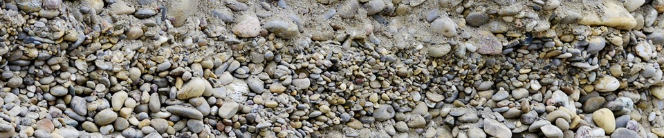
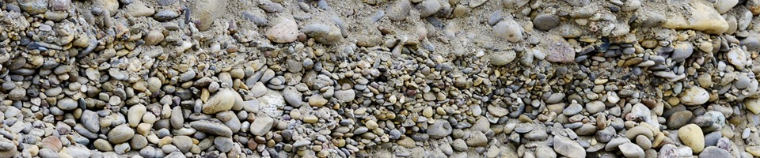
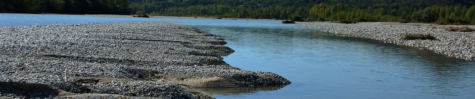
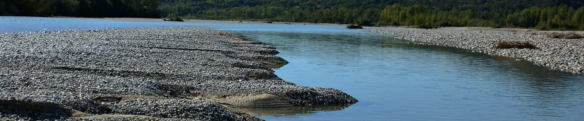
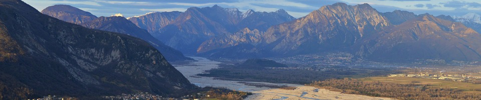
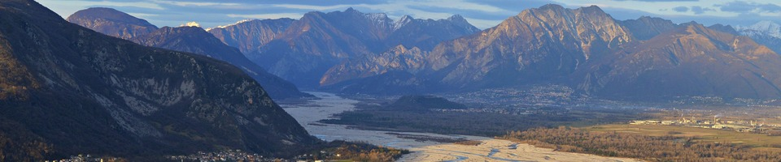

 



 


Uncertainty quantification in subsurface flow forecast problems
Stanford University
more…Uncertainty quantification in subsurface flow forecast problems
Stanford University
This project aims to quantify uncertainty in groundwater flow forecast models by accounting not only for uncertain geological models but also for uncertain boundary conditions, data and simulation-data relationship. Stochastic models of these sources of uncertainty will be developed and integrated into a Bayesian framework.
More specifically, we are further developing the so-called ‘prediction-focused analysis’ for direct forecasting that circumvents classical inversion. I focus on the modelling of uncertain boundary conditions (e.g., specified hydraulic heads or river water–groundwater interaction) as well as on the integration of partly redundant data variables.
GauProMod: a R-package for Gaussian Process Modelling
Code and short tutorial available on github